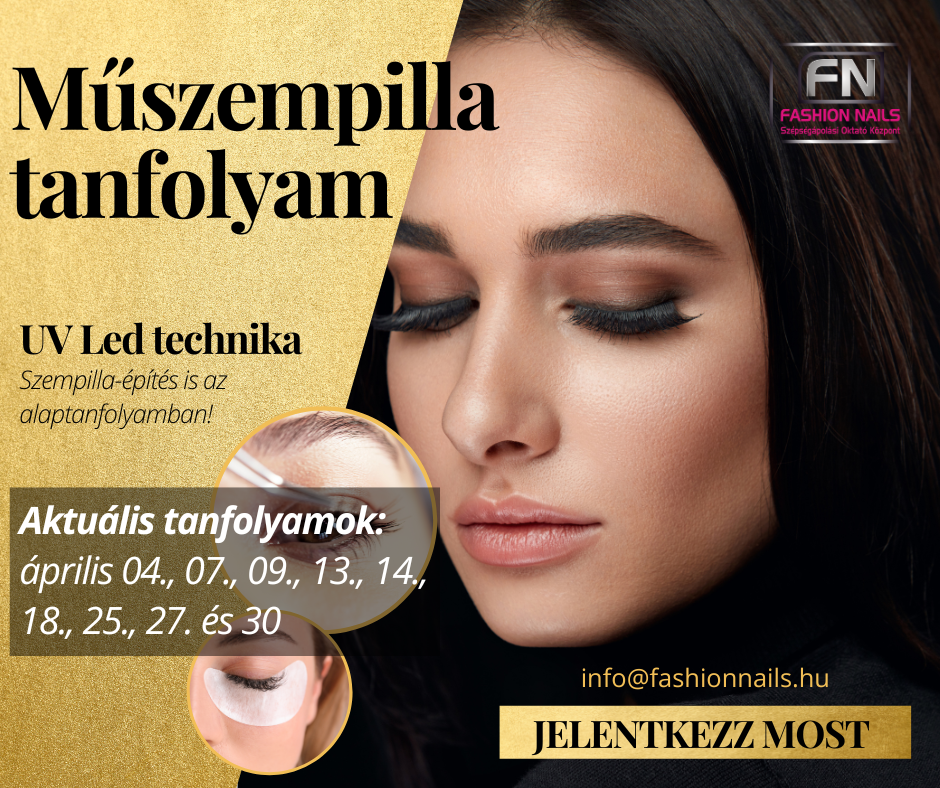
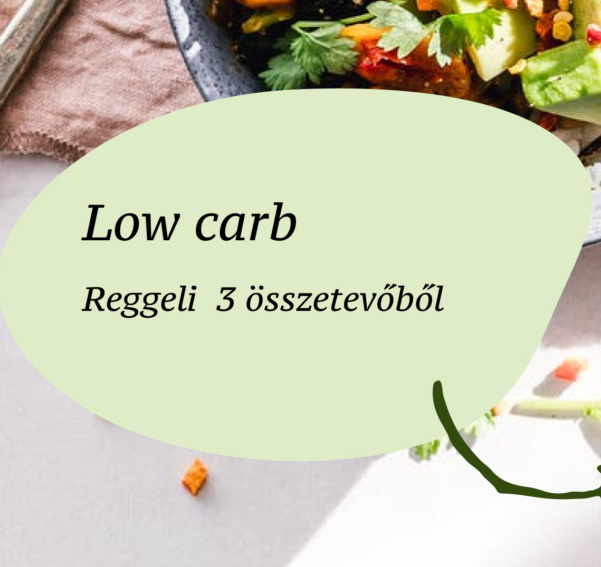
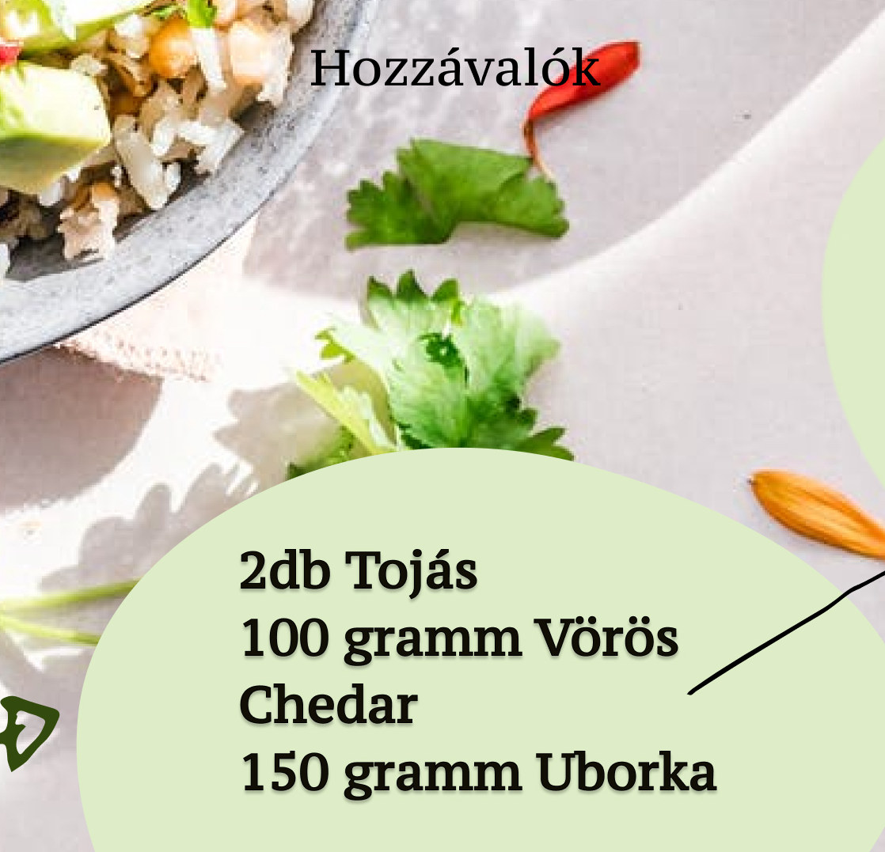
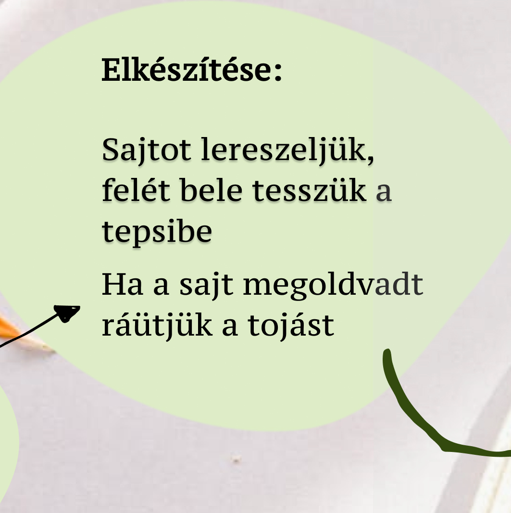

Webes tartalom trendek
és Influencer marketing
A digitalizáció térnyerésével egyre fontosabbá válik az online jelenlét és az internetes tartalom szerepe mind a fogyasztók, mind a márkák számára. A "Webes tartalom trendek és Influencer marketing" témakör egy olyan dinamikus és folyamatosan változó területet fed le, amely a digitális világban zajló legújabb fejleményekre és tendenciákra fókuszál.
A webes tartalom trendjei állandóan alakulnak és fejlődnek az új technológiák és fogyasztói szokások hatására. Napjainkban a felhasználók egyre inkább a multimédiás tartalmakat preferálják, ideértve a videókat, podcastokat és élő közvetítéseket is. Emellett az interaktív tartalmak, például az élénkített valóság (AR) és a virtuális valóság (VR) alkalmazása is egyre elterjedtebbé válik.
Az influencer marketing pedig egy másik jelentős tényezővé vált az online térben. Az influenszerek, akik nagy követőbázissal rendelkeznek a különböző közösségi média platformokon, hatékonyan képesek befolyásolni a fogyasztói döntéseket és viselkedést. Az influencer marketing lehetőséget teremt a márkák számára a célközönségük elérésére és megszólítására egy megbízható és hiteles forrás által.
Ebben a dinamikus digitális környezetben a vállalatoknak és az online tartalomgyártóknak lépést kell tartaniuk a legfrissebb trendekkel és módszerekkel annak érdekében, hogy hatékonyan tudjanak kommunikálni és elérni a célközönségüket. A "Webes tartalom trendek és Influencer marketing" témakör felfedezése során feltárhatjuk, hogyan formálja és alakítja át az internetes tér az információ áramlását és a fogyasztói szokásokat, valamint hogyan lehet kihasználni ezeket a trendeket és lehetőségeket a sikeres online jelenlét érdekében.
Webes tartalom trendek
AI(mesterséges intelligencia)
A marketingszakemberek számára már világos, hogy a ChatGPT és más mesterséges intelligencia-eszközök (egyelőre még) nem azok a mindent tudó, mindenható eszközök, amelyeknek korábban hittük őket.
„Emberi” tartalom és storytelling
Ha már a robotokról és mesterséges intelligenciáról beszéltünk az előző pontban, a célközönség mostanában jobban értékeli a valódi és hiteles, emberi hangvételű beszélgetést, mint valaha.
Magával ragadó és interaktív marketing
Még ebben a fehér zajban is éhezik a közönség arra, hogy interakcióba léphessen a kedvenc márkájával, influencerével vagy épp éttermével. Éppen ezért jövőre az interaktív marketing elemek iránti igény egyre csak fokozódik.
Tartsd közel a barátaidat és még közelebb a versenytársaidat
A versenytársaink tevékenységének nyomon követése mindig is szerepelt marketingteendőink listáján, hiszen a digitális marketing világa versenyképesebb, mint korábban bármikor.
Influencer marketing
Az Instagram marketing a közösségi média marketing egyik ágazata, amely az Instagram kínálta platformot használja fel egy márka népszerűsítésére. Ez a közösségi médiás platform lehetővé teszi a márkák számára, hogy egy óriási közönséggel kerüljenek kapcsolatba, megerősítsék márkaismertségüket és több értékesítést bonyolítsanak le.
| Típus | Leírás | Példa |
|---|---|---|
| Fénykép | Egy statikus kép megosztása. |  |
| Videó | Egy videó megosztása. | |
| Carousel | Több kép vagy videó megosztása egy bejegyzésben, amelyet a felhasználó lapozhat. |



|
TikTok
2018-ban a kínai Bytedance felvásárolt egy Musical.ly nevű közösségi appot, ahol a felhasználók rövid, szájszinkronizált videókat készíthettek és oszthattak meg. A dolog szépsége az volt, hogy ezeket a videókat a YouTube-ra feltöltött próbálkozásokkal ellentétben nem lőtték ki azonnal copyright támadásokkal a nagy kiadói sniperek. A Musical.ly ezután összeolvadt a Bytedance vadonatúj, TikTok nevű appjával (ez Kínában Douyin néven fut).
- Feed - Az alkalmazás fő hírfolyamában történő megosztás, amely elérhető a követőid és a TikTok közösség számára.
- Story - Az alkalmazásban lévő rövid ideig elérhető történetekbe történő megosztás.Üzenet - Privát üzenetként történő megosztás a TikTok felhasználók között.
- Email - Emailben történő megosztás közvetlenül a TikTok alkalmazásból.
- Más közösségi média platformok - Lehetőség más közösségi média platformokon történő megosztásra, például Facebook, Instagram, Twitter stb.